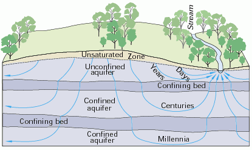
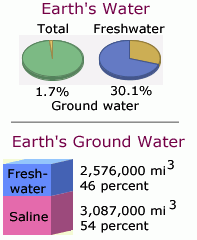

Groundwater
Water is evaporated from the oceans and the land and returned as rain or snow, forming the hydrologic cycle.

|  |
|  |
| Water source | Water volume, in cubic miles | Water volume, in cubic kilometers | Percent of total water | Percent of total freshwater | |
|---|---|---|---|---|---|
| Fresh ground water | 2,526,000 | 10,530,000 | 0.8% | 30.1% | |
| Ground water | 5,614,000 | 23,400,000 | 1.7% | -- | |
| Total global water | 332,500,000 | 1,386,000,000 | -- | -- | |
| Source: Gleick, P. H., 1996: Water resources. In Encyclopedia of Climate and Weather, ed. by S. H. Schneider, Oxford University Press, New York, vol. 2, pp.817-823. | |||||
| Water | Patterns of runoff |
Geophysics concepts
Reference
Lutgens & Tarbuck
Ch 9
| HyperPhysics | R Nave |